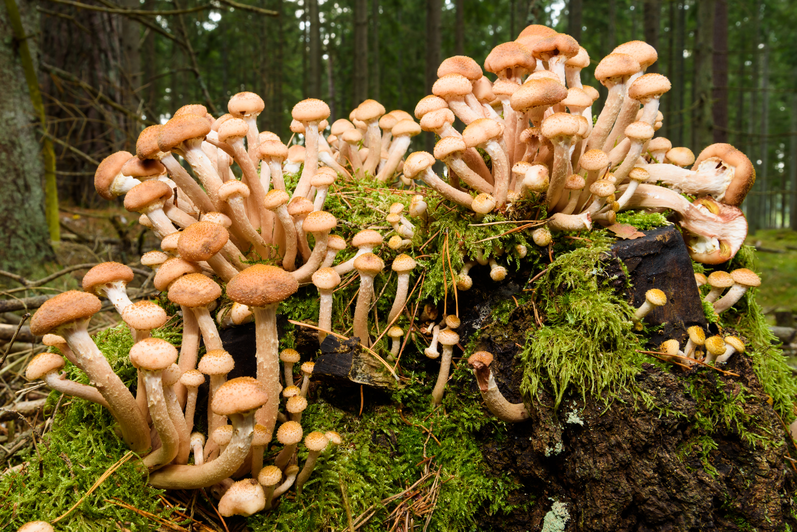
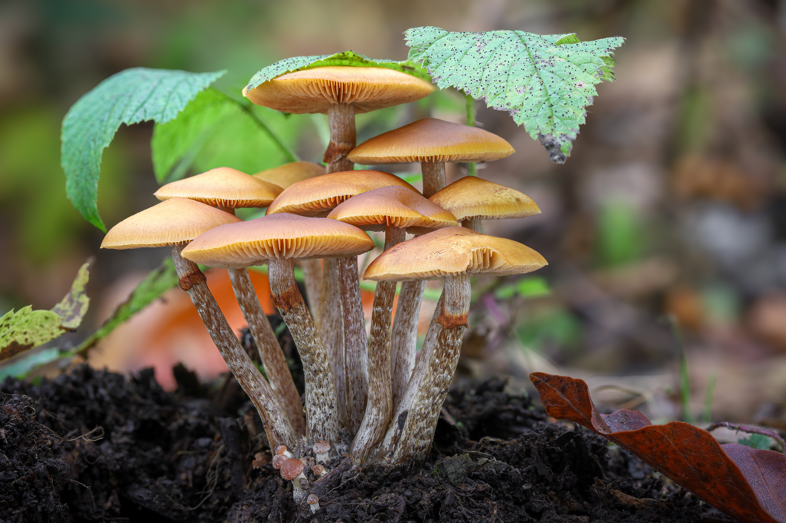

Honey Mushrooms/Fungus
Armillaria mellea.
Armillaria, commonly known as honey fungus, is a genus of fungi that grows on trees and woody shrubs, often forming dense clusters. Some species, like Armillaria ostoyae, are among the largest and oldest living organisms in the world, covering several square miles and living for thousands of years. Their caps are yellow-brown and sticky when moist, with shapes ranging from conical to convex, and all species produce a white spore print without a volva. Honey fungi are facultative parasites, causing white rot root disease and killing their hosts while spreading through root-like rhizomorphs and occasionally wood-boring beetle activity. Some species even display bioluminescence, known as foxfire. While edible when cooked thoroughly, honey fungus must be prepared carefully, as it can cause mild poisoning if eaten raw or with alcohol.
Honey fungus grows in clumps on trees and shrubs, with yellow-brown sticky caps and white spores. Some species are enormous and thousands of years old, spreading through roots and killing their hosts. Some glow in the dark, and while edible when cooked, they can cause sickness if eaten raw or with alcohol.

Deadly Galerina Mushrooms
Galerina marginata.
Galerina marginata, also known as the funeral bell, deadly skullcap, or deadly Galerina, is an extremely poisonous mushroom in the family Hymenogastraceae. It typically grows on decaying conifer wood, sometimes hardwoods, often in small clusters, and is widely distributed across the Northern Hemisphere, including North America, Europe, Asia, Japan, Australia, and even Antarctica. The mushroom has a small to medium brownish-orange cap, 1–6 cm in diameter, convex when young and flattening with age, sometimes featuring a small central bump. Its gills are narrow, crowded, and brownish, producing a rusty-brown spore print. The stem, 2–8 cm long, is whitish to brown with a membranous ring that often disappears as the mushroom matures. The flesh is thin, pliant, and can have a slightly flour-like odor.
Galerina marginata contains deadly amatoxins and cause severe liver and kidney damage, vomiting, diarrhea, and potentially death if ingested. The species is easily mistaken for edible mushrooms that also grow on wood, such as Armillaria mellea (honey mushroom), making correct identification critical. Because of its nondescript “little brown mushroom” appearance and potent toxins, this mushroom is extremely dangerous and should never be consumed.